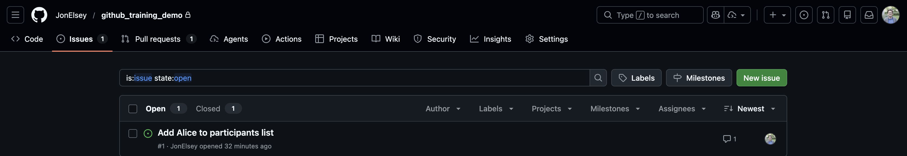
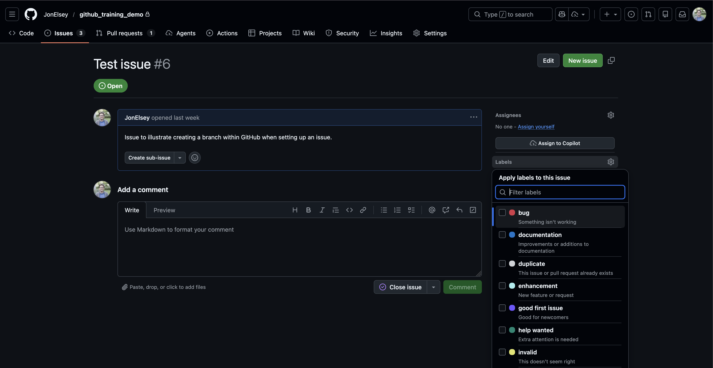

Issues
Planning work, capturing intent, and making collaboration easier
Why issues matter
A very useful habit to get into: use Issues. Issues are the beginning of our GitHub workflow:
Issue -> Branch -> Commits -> Pull Request -> Review -> Merge
Issues are not just for bug reports. They are useful for:
- new features
- changes in scientific approach
- evolving new sub-products
- questions you don’t yet know how to answer
Think of an Issue less as “something broken” and more as a ticket. They aren’t only about technical details of the code; they can capture wider project management or scientific goals.
Issues should be a log of what you are doing, why you are doing it, and what you learned along the way
They do not need to be formal documentation — but they should be a bit more structured than private notes.
Think of Issues as creating a shared memory for the project. If your idea stays private, it may be forgotten or half-implemented. Turning that into an Issue gives the team a permanent record of that idea that they can look at at any time, iterate with you on or even try and implement themselves.
We do have other resources to share ideas (Teams, weekly meetings). The advantage of using GitHub is that Issues are more searchable and findable than e.g. threads on Teams, and less likely to be forgotten about and more likely to be discussed compared to individual meeting notes.
Collaboration benefits
Issues make collaboration easier in multiple ways. Teammates can see what you are working on and suggest ideas. Reviewers can understand the motivation behind your changes, and see alternatives you tried (and discarded).
They can be a useful way to frame e.g. line management meetings; ideas and outcomes can be written down in Issues related to that piece of work, which creates a fixed, findable record of the ideas and suggestions made.
Setting up an issue does not imply you need to work on it right now!
Creating an Issue does not mean you are committing to implementing it immediately. In fact, it can be a really key benefit of Issues - getting in the habit of using them might make you take a step back and think about things at a high level before diving into writing code.
If you notice a problem, think of an improvement, have an idea you don’t yet have time for, whatever, open an Issue anyway. Even a short Issue now is better than a forgotten idea later.
Workflow
- Encounter a problem or idea
- Create an Issue:

- In your Issue, write down:
- what the problem is
- ideas for how to approach it
- Start work on the idea
- update the Issue with what you try
- include things that didn’t work
- Set up a (pull request)[day1_pull_requests.qmd] when the work is nearing completion.
Please do include failed approaches — they save reviewers from re‑suggesting them, and you from trying to re-implement using that approach later.
Issues don’t need to be verbose. Even one or two sentences of context can be immensely helpful.
Even creating an Issue that is just a title and a couple of sentences writes down the idea somewhere that is searchable and readable on demand.
The Pareto principle applies: 20% extra effort = 80% of the benefit!
Splitting work with sub‑issues
Issues should be used for both small pieces of work (squashing bugs) and more ambitious (whole-scale rewriting of a codebase, creating new data products).
For large pieces of work (e.g. “design a whole new sub‑product”), create an Issue, but you can then also create sub-Issues to track particular bits of work, e.g.:
- What science questions need answering?
- What technical problems need solving?
- What data or validation is required?
Linking Issues to code
Your Issue should reference the branch you are working on once it is made. This links several parts of our main workflow together:
Issue -> Branch -> Commits -> Pull Request -> Review -> Merge
GitHub will auto‑link Issues and pull requests (PRs) if:
- the branch is created from the Issue
- you mention #issue-number in commits or PR descriptions, e.g. typing
closes #23
will prompt a link to #23.
Use labels!
Labels let you give an easily viewable, high level overview of the type of thing you’re trying to solve. For example, a bug label implies that your colleagues should probably take a look at your Issue, since it may affect their work. You can use the good first issue or help wanted labels to indicate that certain people should help out with your Issue, etc.

Example Issue
This is an example of what an Issue might look like - it can be more or less verbose than this depending on the task.
Add seasonal aggregation option to the LST processing
Summary
We currently provide annual land surface temperature aggregates. Several internal users have requested seasonal aggregates (DJF, MAM, JJA, SON).
Proposed workflow
- Add
seasonoption toconfig.yaml - Map each date to a season using Python’s
datetime - Plug this into the same statistics pipeline we use for annual outputs.
- Export to a new
seasonal/directory in the output directory.
Open questions:
- Should users be able to define custom seasonal groupings, or stick with the standard meteorological seasons (DJF etc.)
- How do we actually implement this into our pipeline?
- How do we make this work in practice? Annual processing was already stretching memory limits on the server.
Comment 2 (by @helpful_rseperson)
I think we can solve the memory issue using chunking. Rather than processing each tile sequentially in a loop, we can use dask DataFrames - these are read in lazily, so we break up each file into bits that can fit into memory.
See (link_to_docs) for more info. I think if you replace:
<python_code_with_loops>with
<python_code_with_chunked_tasks>this should now work. Let me know how it goes - shout if you need help!
Key takeaways
Use Issues early and often. Think of them as shared project management spaces.
Using them will make managing work within the data products more collaborative, and reduce the amount of extra work we have to do to make it all fit together.
Live demo
🎥 Live demo
Create: - a new Issue - from that Issue, create a branch
Show how they stay linked automatically.
Comment 1 (by @original_author)
I’ve added
seasontoconfig.yaml, which can now be eitherannual(default behaviour as before) orseasonal.imago-toolkit/pull/25inimago-toolkithas been set up to merge in the support for seasonal processing in the main pipeline.I tried a few things in
/demo/seasonal_testing.ipynb. Usingdatetimeout-of-the-box didn’t work because of the input data format. However,polarshas a utility (foo) that we can use directly on the inputDataFrame- this seems to work!Next step is that memory issue… any ideas @helpful_rseperson?